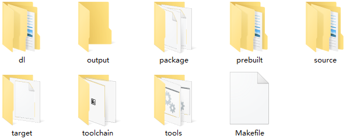

代码结构
15 Jan 2024
Read time: 4 minute(s)

Luban SDK 中有以下重要的文件和目录，其分类和功能如下所述。
Luban
├── dl --> 第三方源码的压缩包保存目录
├── output --> 默认的编译输出目录
├── package --> 各编译源码包/组件的配置
│ ├── Config.in --> menuconfig 配置的顶层入口
│ ├── artinchip --> ArtInChip 开发的组件配置
│ ├── linux --> 内核的配置
│ ├── opensbi --> OpenSBI 的配置
│ ├── uboot --> UBoot 的配置
│ ├── third-party --> 其他开源软件包的配置
│ ├── ...
│
├── prebuilt --> 预编译二进制包的保存目录
├── source --> 源码保存目录
│ ├── artinchip --> ArtInChip 开发的组件源码目录（不会删除）
│ ├── linux-5.10 --> 内核的源码目录（不会删除）
│ ├── opensbi --> OpenSBI 的源码目录（不会删除）
│ ├── uboot-2021.10 --> U-Boot 的源码目录（不会删除）
│ └── third-party --> 其他开源软件包解压后的源码目录（make distclean 会删除）
│
├── target --> 芯片和具体板子的配置
│ └── configs --> 存放项目的配置文件
│ ├── d211_initramfs_defconfig
│ ├── d211_per1_mmc_defconfig
│ ├── d211_per2_spinand_defconfig
│ ├── d211_per2_spinor_defconfig
│ ├── d211_fpga_mmc_defconfig
│ ├── configs_busybox -> ../../package/third-party/busybox/configs/
│ ├── configs_linux_arm -> ../../source/linux-5.10/arch/arm/configs/
│ └── configs_uboot -> ../../source/uboot-2021.10/configs/
│
├── tools --> 辅助脚本和工具
│── toolchain --> 编译所使用的 gcc 工具链保存目录
└── Makefile --> SDK 的顶层 Makefile三方代码目录
在 SDK 代码目录中，third-party、dl 和 prebuilt 为三方目录，分别用于存放第三方库、下载工具和预编译二进制包。使用不同的源码编译方式，三者的使用顺序和流程也不相同，详情如下所示：
-
如果使用预编译二进制包：
-
extract：从 prebuilt 目录中提取预编译的二进制包。 output/build：将提取出来的文件放置在构建输出目录中。install：将构建输出目录中的文件安装到目标系统 (target) 或主机系统 (host)。output/target (or host)：最终的目标系统或主机系统上安装了预编译的二进制包。
prebuilt –(extract) →output/build–(install) →output/target(or host) -
-
如果使用源码编译：
extract：从 dl 目录中提取第三方库的源码。source/third-party：将提取出来的源码放置在源代码目录中。build：对 source/third-party 目录中的源码进行编译。output/build：将编译生成的文件放置在构建输出目录中。install：将构建输出目录中的文件安装到目标系统 (target) 或主机系统 (host)。output/target (or host)：最终的目标系统或主机系统上安装了编译后的二进制包。
dl –(extract) →source/thrid-party–(build) → output/build –(install) →output/target(or host)
输出目录
output/
├── build --> 编译的工作目录
│ ├── busybox-1.34.1
│ ├── ...
│
├── host --> 主机工具的安装目录
│ ├── arm-linux-gnueabihf/sysroot
│ ├── bin
│ ├── etc
│ ├── include
│ ├── lib
│ ├── lib64 -> lib
│ ├── opt
│ ├── sbin
│ ├── share
│ └── usr -> .
├── images --> 最终的镜像文件输出目录
│ ├── d211_per1_v1.0.0.img
│ ├── ...
│
├── staging -> host/arm-linux-gnueabihf/sysroot --> 交叉编译的暂存目录:库与头文件
│ ├── lib --> 导出的库，给其他包编译链接使用
│ ├── usr
│ │ ├── include --> 内核导出的头文件、其他包导出的头文件
│
├── target --> 打包到 RootFS 中的内容存放目录
│ ├── bin
│ ├── dev
│ ├── etc
│ ├── init
│ ├── lib
│ ├── lib32 -> lib
│ ├── linuxrc -> bin/busybox
│ ├── media
│ ├── mnt
│ ├── opt
│ ├── proc
│ ├── root
│ ├── run
│ ├── sbin
│ ├── sys
│ ├── THIS_IS_NOT_YOUR_ROOT_FILESYSTEM --> 当前目录不是最终执行 RootFS 打包的目录
│ ├── tmp 生成 RootFS 前，target 目录的内容会被拷贝
│ ├── usr 到 output/luban-fs/ 目录下执行打包
│ └── var
└── userfs --> 自定义的文件系统目录